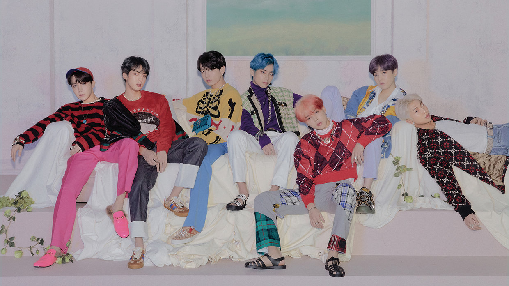

BTS' Label Big Hit Entertainment Cracks Down on Bootleggers in New Court Filing
4/30/2019 by Chris Eggertsen
Big Hit Entertainment, the South Korean company behind blockbuster K-Pop band BTS, is calling for a crackdown on bootleggers.
In a complaint filed in California district court April 25, Big Hit Entertainment claims an “exclusive right” to the BTS trademark and is calling for court authorization to seize and destroy any unauthorized merchandise being sold outside the group’s concerts by the U.S. Marshal and other law enforcement. The company states bootleged tour and program books, T-shirts, jerseys, sweatshirts, hats, visors, buttons, posters and other such items are “likely to injure the reputation” of Big Hit Entertainment and BTS due to its “inferior” quality.
BTS is about to kick off an extension of its hugely-lucrative Love Yourself: Speak Yourself World Tour this weekend, starting May 4 and 5 at the Rose Bowl in Pasadena, California.
Big Hit Entertainment cites violations of the Lanham Act, California Civil Code § 3344(a) and California Business & Professions Code §§ 17200 in its complaint. They claim they are also entitled to damages due to loss of income from the unauthorized merchandise.
BTS is currently up for best social artist and best group honors at the 2019 Billboard Music Awards, which is being held at Las Vegas’s MGM Grand Garden Arena on Wednesday. Their most recent album, Map of the Soul: Persona, debuted at No. 1 on the Billboard 200. The band has also spent 124 weeks at No. 1 on the Billboard Social 50 chart.
Big Hit Entertainment has profited immensely from the rise of BTS on the world stage. The company nearly doubled its operating profit last year to 64.1 billion KRW ($56.72 million), largely on the strength of the group’s success. Revenue also spiked 132% to 214 billion KRW ($189.38 million), while net income was up 105% to 50.2 billion KRW ($44.41 million).